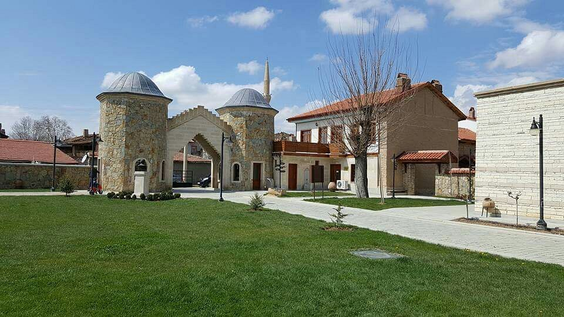
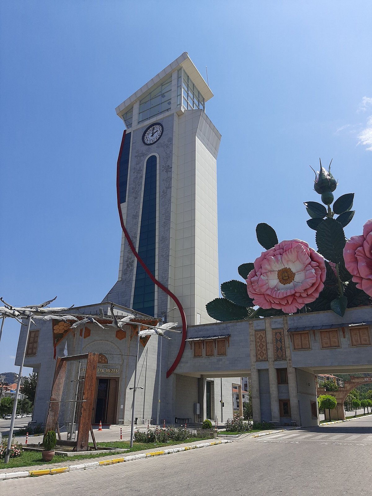
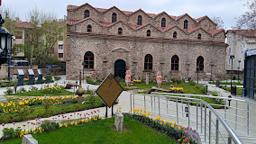
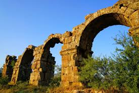
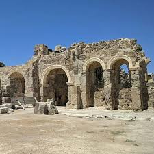
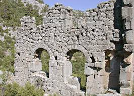
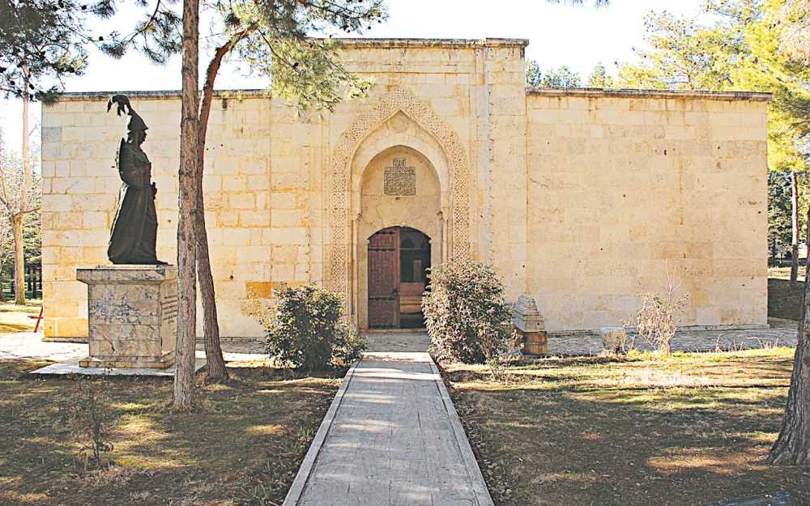
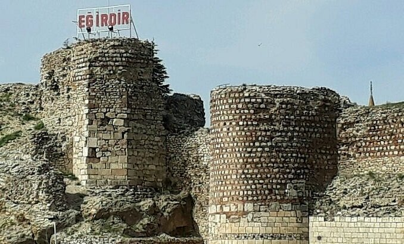

Güller Diyarı Isparta
Isparta'nın görülmesi gereken tarihi yapıları ve müzeler.

Isparta'nın görülmesi gereken tarihi yapıları ve müzeler.

9. Cumhurbaşkanı Süleyman Demirel'in doğduğu köyde yer alan bu özel müze, Türkiye'nin demokrasi geçmişine ve kalkınma süreçlerine ışık tutmaktadır. Demirel'in kişisel eşyaları, aldığı hediyeler ve siyasi hayatına dair belgeler sergilenmektedir
Yol tarifi Detaylı İncele
Müzede Selçuklu döneminden günümüze uzanan yaklaşık 3.500 adet halı, kilim ve etnografik ürün sergilenmektedir. Başta meşhur Isparta halıları olmak üzere Gördes, Lâdik, Kars, Milas ve Şirvan gibi Anadolu'nun pek çok farklı yöresine ait el dokuması eserler yer alır
Yol Tarifi Detaylı İncele
bölgenin zengin tarihini ve yerel kültürünü yansıtan 18 bine yakın arkeolojik, etnografik ve sikke esere ev sahipliği yapmaktadır. İki ana bölümden (Arkeoloji ve Etnografya) oluşan müze, Isparta Merkez İstiklal Mahallesi'nde bulunmaktadır
Yol Tarifi Detaylı İncele
Isparta Belediyesi tarafından şehre kazandırılan, Türkiye’nin ilk ve tek, dünyanın ise 5. koku müzesidir. Dünyaca ünlü kozmetik markalarının kalıcılık formüllerinde kullanılan kadim Isparta gülünün mirasını korumak amacıyla, 1750’li yıllarda inşa edilen tarihi Aya Baniya (Aya Panaya) Kilisesi’nin restore edilmesiyle ziyarete açılmıştır.Müze, kokunun Antik Çağ’dan günümüze uzanan tarihsel serüvenini interaktif ve deneysel yöntemlerle ziyaretçilerine sunmaktadır
Yol Tarifi Detaylı İncele
Antioheia, Türkiye'nin Akdeniz, Ege ve İç Anadolu bölgelerinin kesiştiği noktadaki Göller Yöresi'nde, tarihi Pisidya ve Frigya'nın sınırında bulunan antik kenttir. Pisidya Antakyası olarak da bilinir. Isparta ilinin modern ilçesi Yalvaç'ın kuzey şeridinde 1 km'lik bir alanı kapsar.
Yol tarifi Detaylı İncele
Men Tapınağı veya Men Kutsal Alanı, Isparta'nın Yalvaç ilçesindeki Pisidia Antiokheia Antik Kenti sınırları içinde yer alan, Ay Tanrısı Men'e adanmış tarihi bir dini merkezdir. MÖ 4. yüzyılda inşa edilen ve Karakuyu Tepesi'nde bulunan bu kutsal alan, şifa arayanların ve hastaların sığındığı önemli bir inanç noktasıdır.
Yol tarifi Detaylı İncele
Adada Antik Kenti, Isparta’nın Sütçüler ilçesine bağlı Sağrak köyü yakınlarında yer alan, Pisidya bölgesinin en sağlam korunmuş antik yerleşimlerinden biridir. Helenistik dönemden Bizans dönemine kadar kesintisiz yaşam izleri barındıran kent; doğal güzellikleri ve etkileyici Roma dönemi kalıntılarıyla dikkat çekmektedir
Yol tarifi Detaylı İncele
Isparta'nın Atabey ilçesinde yer alan Ertokuş Medresesi, Anadolu Selçuklu döneminden günümüze ulaşan en önemli tarihi yapılardan biridir. I. Alâeddin Keykubad döneminde, Selçuklu uç kumandanı Mübarizeddin Ertokuş tarafından 1224 yılında inşa edilmiştir
Yol tarifi Detaylı İncele
Eğirdir Kalesi, Isparta'nın Eğirdir ilçesinde, şehri göle bağlayan ince bir kıstak üzerinde yer alan tarihi bir yapıdır. İç ve dış kale olmak üzere iki bölümden oluşur. Günümüze ulaşan kalıntıların temelleri Bizans dönemine dayansa da, Dündar Bey zamanında onarımlar görmüş ve aktif olarak kullanılmıştır.
Yol tarifi Detaylı İncele